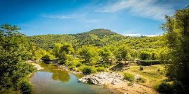

Saturday = Preston Pancakes in the Park! 9:00 AM
Preston:

Weather Summary:
Events
5-Day Weather Forecast
| Day | |||||
|---|---|---|---|---|---|
| Forecast | |||||
 |
Preston History

Each year Preston holds the "Idaho Festival of Lights",[9] which starts the day after Thanksgiving
and goes until December 31. The festival was started by two local business men (Wayne Bell and Walter Ross)
along with many other community organizations to help celebrate Christmas within the community. The festival
consists of a lighted parade, fireworks, and displays in the city park.The merchants along the main street of
Preston have their store fronts decorated with Christmas lights during the festival.
-Wikipedia
Contact Information
The Weather Corner:
111 W 7 S
Preston Idaho
☎ 208-999-7199